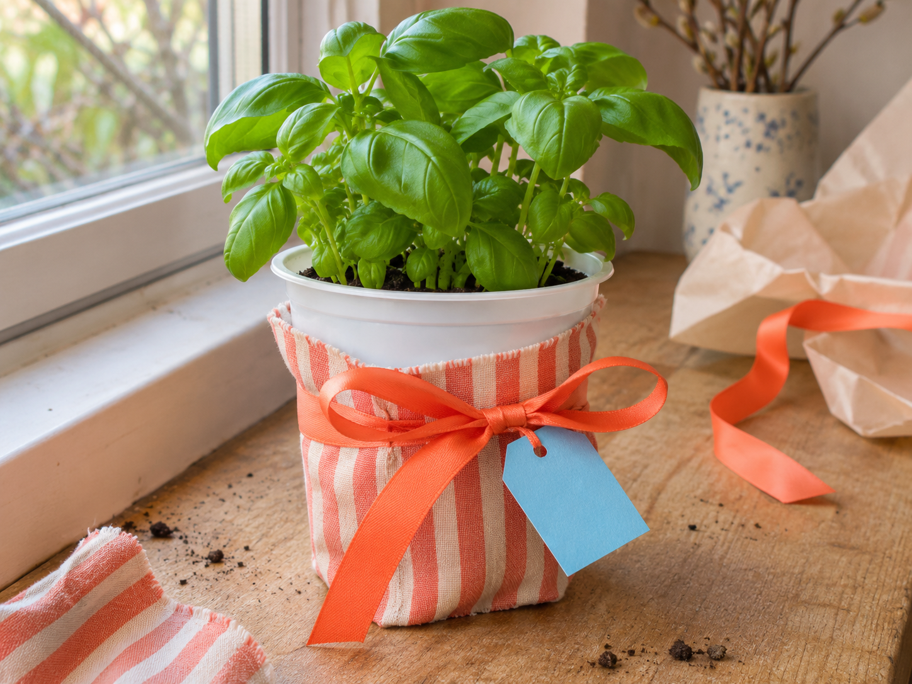
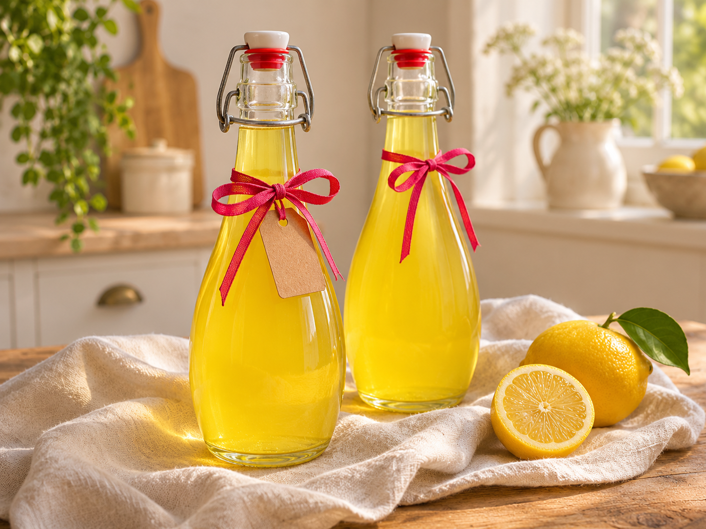
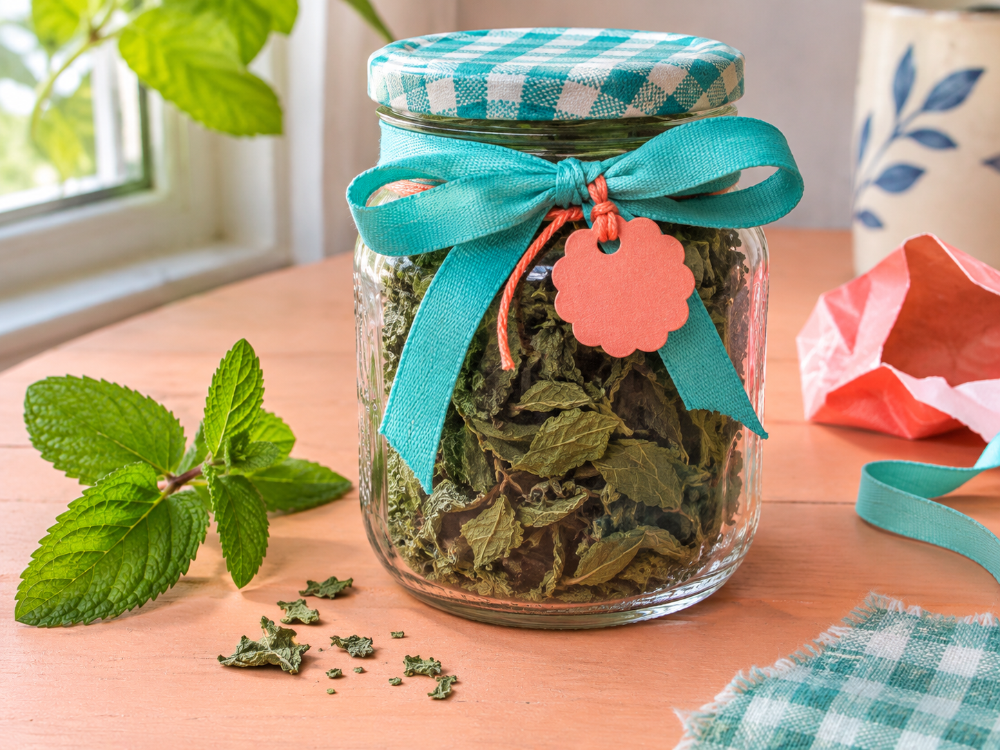
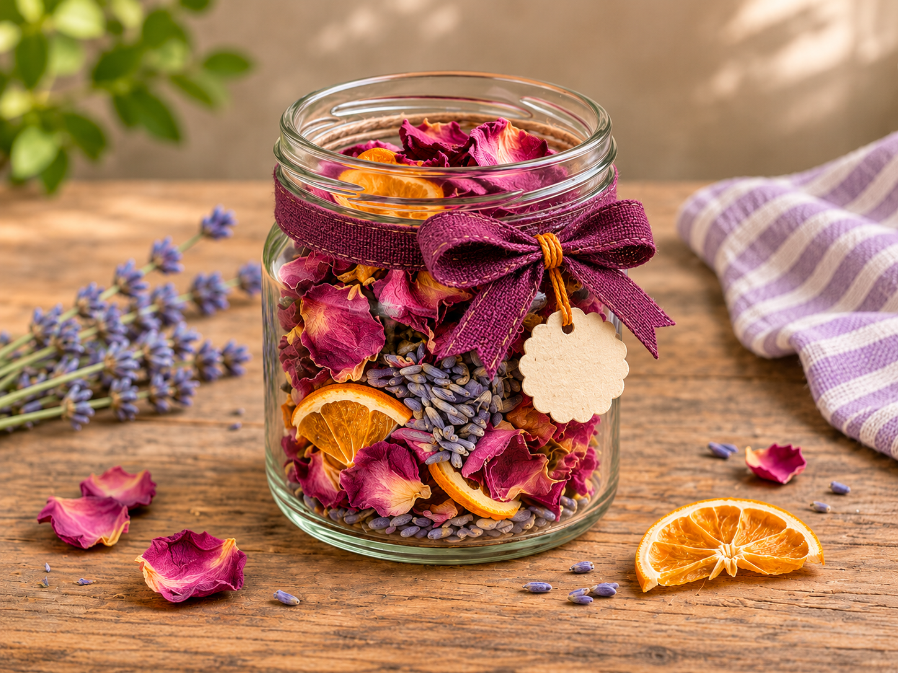

Spring til indhold
Søg efter gaveidéer
Søg
Menu
Luk menu
Forside
Konceptet
Guider
Video
Kontakt
Hjemmelavet likør med appelsin og vanilje, pyntet med et festligt bånd.

En frodig basilikum i en genbrugspotte med stofrest og gavemærke.
Del dine yndlingsblomster i små frøkuverter foldet af brugt papir.
Duftende urter og groft salt i et genbrugsglas med bånd.

En frisk citronlikør, der kan gives i en pyntet genbrugsflaske.
En lille gave til badeværelset med træske og gavemærke.

Gem havens mynte i et glas, og giv den videre til en teelsker.

Tørrede rosenblade, lavendel og appelsinskal - duftende pynt i et glas.